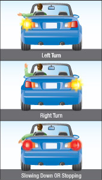
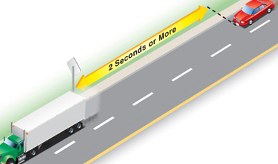

Always be aware of traffic around you as you drive. Develop a routine for looking ahead, behind and from side to side. Check your mirrors every five seconds or so, and check your blind spots by turning your head to look over your shoulder. Keep other drivers out of your blind spot by changing your speed and don't drive in other vehicles' blind spots. This is especially true when driving around large commercial vehicles, as they typically have large blind spots to the sides and back. Be extra careful at dusk and dawn when everyone has difficulty adjusting to the changing light.
Keep a cushion of space around your vehicle and be prepared for the unexpected. Anticipate other drivers movements and make allowances for every possible error. Look well ahead and watch for people in parked vehicles, they may be about to pull out in front of you or to open a door. Watch for smaller vehicles, bicycles and pedestrians.
Steer smoothly
All steering should be smooth and precise. You should do most steering and lane changes without taking either hand off the wheel. You must be able to steer in a straight line while shifting gears, adjusting controls or checking your blind spot.
Picture the steering wheel as a clock and place your hands at nine o'clock and three o'clock.
Use of turn signals and brake lights

Diagram 2-8
Signals tell other drivers what you want to do, alerting them to your intention to turn or stop.
Use your turn signals and brake lights to signal before stopping, slowing down, turning, changing lanes, leaving the road or moving out from a parked position. Give the correct signal well before taking the action and make sure other drivers can see it. Check that the way is clear before you act, just signalling is not enough. Follow the rules for turns, whether left or right, on lane changes and on yields to other vehicles and pedestrians.
If your turn signals and brake lights are not working, use hand and arm signals. The pictures on the previous page show how to make hand and arm signals. When watching for signals made by others, remember that cyclists may signal right turns by holding their right arms straight out.
After signalling, move only when it is safe to do so.
Keep right
Keep to the right of the road or in the right-hand lane on multi-lane roads unless you want to turn left or pass another vehicle. This is especially important if you are driving more slowly than other vehicles.
Obey speed limits
Obey the maximum speed limit posted on signs along the road, but always drive at a speed that will let you stop safely. This means driving below the maximum speed in bad weather, in heavy traffic or in construction zones. School zones and construction zones often have lower speed limits to protect children and those who work on or near the road.
Where there are no posted speed limits, the maximum speed is 50 km/h in cities, towns and villages, and 80 km/h elsewhere.
Cruise control is a driver aid that can improve fuel economy and prevent you from inadvertently exceeding the speed limit. However, there are some circumstances in which cruise control should not be used, such as adverse driving conditions (wet, icy or slippery roads), in heavy traffic or when you are feeling fatigued.
Speed measuring warning devices are illegal. If you get caught driving with such a device, you will be fined and accumulate demerit points.
Obey police
When police officers are directing traffic, you must follow their directions, even if the directions are different from traffic lights or signs.
When a police officer signals you to pull your vehicle over, you must pull over as far to the right as you safely can and come to a complete stop. Stay in your vehicle and wait for the police officer. You must immediately, upon the police officer’s request, surrender your driver’s licence, vehicle permit (or copy) and insurance. Contrary to popular belief, you do not have 24 hours to present these documents. If you do not obey a police officer’s direction to pull over, you risk being fined, having your licence suspended or even serving time in prison.
Maintaining space
As a general rule, drive at the same speed as traffic around you without going over the speed limit. Leave a cushion of space around your vehicle to let other drivers see you and to avoid a collision.
Whenever you follow another vehicle, you need enough space to stop safely if the other vehicle brakes suddenly. A safe following distance is at least two seconds behind the vehicle in front of you. This lets you see around the vehicle ahead and gives you enough distance to stop suddenly.
Do not block the normal and reasonable movement of traffic.

Diagram 2-9
To give yourself a two-second space, follow these steps:
- Pick a marker on the road ahead, such as a road sign or telephone pole.
- When the rear of the vehicle ahead passes the marker, count "one thousand and one, one thousand and two".
- When the front of your vehicle reaches the marker, stop counting. If you reach the marker before you count "one thousand and two," you are following too closely.
Remember that the two-second rule gives a minimum following distance. It applies only to ideal driving conditions. You will need extra space in certain situations, such as bad weather, when following motorcycles or large trucks, or when carrying a heavy load.
Summary
By the end of this section you should know:
- How to steer and use your vehicle’s signalling system and hand signals
- The importance of maintaining space and how to measure following distance
- Where to position your vehicle on the road and to obey speed limits and police